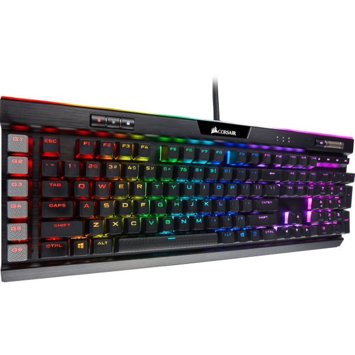
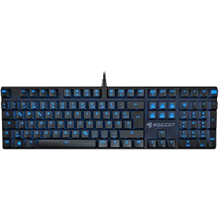
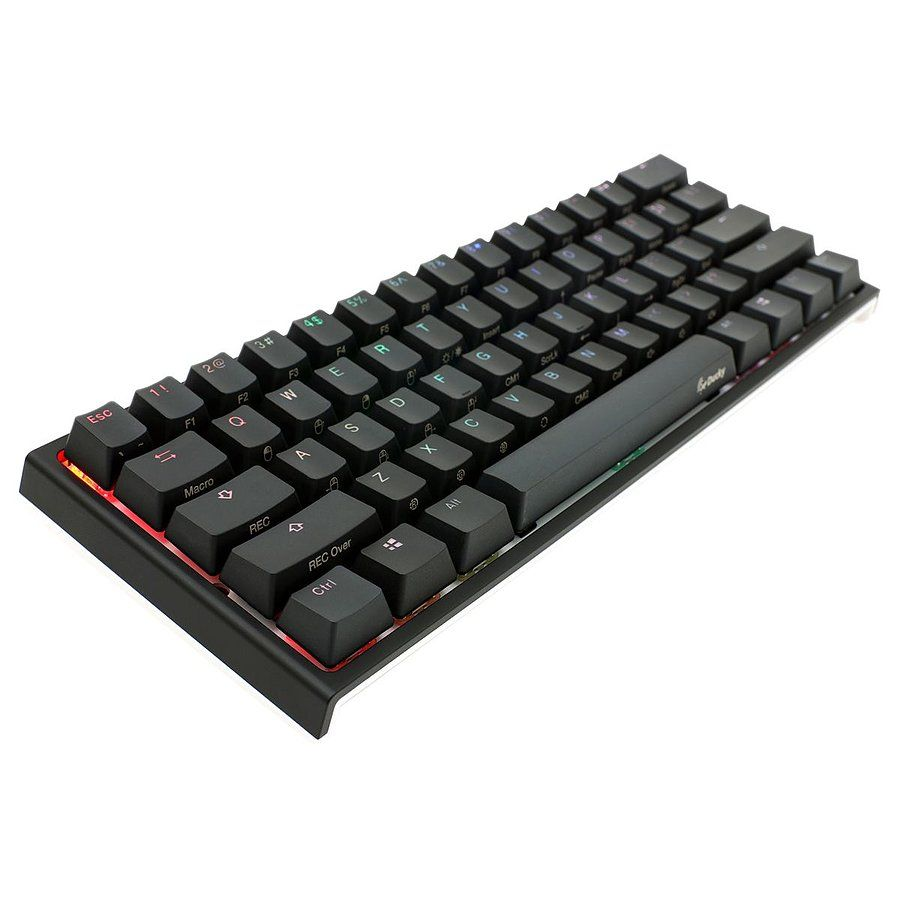

En tant que joueur vous passez un grand nombre d’heures à jouer et il vous faut donc un clavier qui corresponde à vos besoins et vous offre des performances à la hauteur de votre investissement. Dans des situations tendues où tout peux se jouer à un détail votre clavier doit être fiable et réactif. Sur cette page vous trouverez une sélections de claviers gamings avec différents switchs cherry mx, mais aussi des versions RGB.
Liste de nos meilleurs claviers pour jouer

Corsair K95 RGB Platinum
Ce clavier mécanique gaming est disponible avec une variété de switch correspondant à vos besoins du cherry mx red ou blue ou encore brown. Ce clavier avec rétroéclairage RGB rendra à merveille dans votre setup gaming.

Roccat Suora
Moins tape l’oeil que le clavier Corsair mais plus abordable ce clavier mécanique pour joueur possède un rétroéclairage bleu et des switchs de la marque Roccat, si vous cherchez un premier clavier mécanique de joueur le Roccat Suora sera parfait pour vous.

Ducky one 2 mini RGB Noir
Ce clavier mécanique RGB est ultra compact, si vous vous déplacez souvent il sera très pratique tout en ne faisant aucune concession avec sur le confort ou les performances.